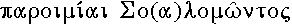

|
| A B C D E F G H I J K L M N O P Q R S T U V W X Y Z |
One of the Sapiential writings of the Old Testament placed in the Hebrew Bible among the Hagiographa, and found in the Vulgate after the books of Psalms and Job.
In the Masoretic Text, the Book of Proverbs has for its natural heading the words , Míshlê Shelomoh (Proverbs of Solomon), wherewith this sacred writing begins (cf. x). In the Talmud and in later Jewish works the Book of Proverbs is oftentimes designated by the single word Míshlê, and this abridged title is expressly mentioned in the superscription "Liber Proverbiorum, quem Hebræi Misle appellant", found in the official edition of the Vulgate. In the Septuagint manuscripts, the two Hebrew titles are rendered by  and , respectively. From these Greek titles again are immediately derived the Latin renderings, "Parabolæ Salomonis", "Parabolæ", a trace of which appears in the Tridentine "Decretum de Canon. Script.", wherein the Book of Proverbs is simply called "Parabolæ". The ordinary title "Proverbia Salomonis" was apparently taken from the Old Latin Version into the Vulgate, whence comes directly the usual English title of "Proverbs". In the Church's liturgy, the Book of Proverbs is, like the other Sapiential writings, designated by the common term "Wisdom". This is consonant to the practice, common in early Christian times, of designating such books by the word "Wisdom" or by some expression in which this word occurs, as "All-virtuous Wisdom", etc. Indeed, it is probable that the title , "Wisdom", was common in Jewish circles at the beginning of Christianity, and that it passed from them to the early Fathers of the Church (cf. Eusebius, Church History IV.22 and IV.26). Of the various names given to the Book of Proverbs, that of Wisdom best sets forth the ethical object of this inspired writing. However disconnected the pithy sayings or vivid descriptions which make up the book may appear, they, each and all, are bound by one and the same moral purpose: they aim at inculcating wisdom as understood by the Hebrews of old, that is perfection of knowledge showing itself in action, whether in the case of king or peasant, statesman or artisan, philosopher or unlearned. Differently from the term "Wisdom", the title Míshlê (St. Jerome, Masloth) has a distinct reference to the symbolic character and poetical form of the sayings which are gathered together in the Book of Proverbs. In general, the Hebrew Mashal (constr. plur. Míshlê) denotes a representative saying, that is, a statement which, however deduced from a single instance, is capable of application to other instances of a similar kind. Taken in this sense, it corresponds pretty well to the words proverb, parable, maxim etc., in our Western literatures. But besides, it has the meaning of sentences constructed in parallelism; and in point of fact, the contents of the Book of Proverbs exhibit, from beginning to end, this leading feature of Hebrew poetry. Hence, it appears that, as prefixed to this inspired writing, the word Míshlê describes the general character of the Book of Proverbs as a manual of practical rules which are set forth in a poetical form.
As it stands at the present day, the Book of Proverbs begins with the general title, "Míshlê Shelomoh, the son of David, king of Israel", which is immediately followed by a prologue (i, 2-6), stating the aim and importance of the entire work: the whole collection aims at imparting wisdom and at enabling men to understand all kinds of Mashals. The first part of the book (i, 7-ix), itself a hortatory introduction to the collection of proverbs which follows, is a commendation of wisdom. After a deeply religious epigraph (i, 7), the writer, speaking like a father, gives a series of exhortations and warnings to an imagined pupil or disciple. He warns him against evil company (i, 8-19); describes to him the advantages attending the pursuit of wisdom, and the evils to be avoided by such course (ii); exhorts him to obedience, to trust in God, to the payment of legal offerings, to patience under the Divine chastisements, and sets forth the priceless value of wisdom (iii, 1-26). After some miscellaneous precepts (iii, 27-35), he renews his pressing exhortation to wisdom and virtue (iv), and gives several warnings against unchaste women (v; vi, 20-35; vii), after the first of which are inserted warnings against suretyship, indolence, falsehood, and various vices (vi, 1-19. At several points (i, 20-33; viii; ix) Wisdom herself is introduced as speaking and as displaying her charms, origin, and power to men. The style of this first part is flowing, and the thoughts therein expressed are generally developed in the form of connected discourses. The second part of the book (x-xxii, 16) has for its distinct heading: "Míshlê Shelomoh", and is made up of disconnected sayings in couplet form, arranged in no particular order, so that it is impossible to give a summary of them. In many instances a saying is repeated within this large collection, usually in identical terms, at times with some slight changes of expression. Appended to this second part of the book are two minor collections (xxii, 17-xxiv, 22; xxiv, 23-34), chiefly made up of aphoristic quatrains. The opening verses (xxii, 17-21) of the first appendix request attention to the "words of the wise" which follow (xxii, 22-xxiv, 22), and which, in a consecutive form recalling that of the first part of the book, set forth warnings against various excesses. The second appendix has for its title: "These also are words of the wise", and the few proverbs it contains conclude with two verses (33, 34), apparently taken over from vi, 10, 11. The third part of the book (xxv-xxix) bears the inscription: "These are also Míshlê Shelomoh, which the men of Ezechias, king of Juda, copied out." By their miscellaneous character, their couplet form, etc., the proverbs of this third part resemble those of x-xxii, 16. Like them also, they are followed by two minor collections (xxx and xxxi, 1-9), each supplied with its respective title. The first of these minor collections has for its heading: "Words of Agur, the son of Takeh", and its principal contents are Agur's meditation on the Divine transcendence (xxx, 2-9), and groups of numerical proverbs. The second minor collection is inscribed: "The Words of Lamuel, a king: the oracle which his mother taught him." In it the queen-mother warns her son against sensuality, drunkenness, and injustice. Nothing is known of Agur and Lamuel; their names are possibly symbolical. The book concludes with an alphabetical poem descriptive of the virtuous woman (xxxi, 10-39).
A close study of the present Hebrew Text of the Book of Proverbs proves that the primitive wording of the pithy sayings which make up this manual of Hebrew wisdom has experienced numerous alterations in the course of its transmission. Some of these imperfections have, with some probability, been assigned to the period during which the maxims of the "wise men" were preserved orally. Most of them belong undoubtedly to the time after these sententious or enigmatic sayings had been written down. The Book of Proverbs was numbered among the "Hagiographa" (writings held by the ancient Hebrews as less sacred and authoritative than either the "Law" or the "Prophets"), and, in consequence, copyists felt naturally less bound to transcribe its text with scrupulous accuracy. Again, the copyists of Proverbs knew, or at least thought they knew, by memory the exact words of the pithy sayings they had to write out; hence arose involuntary changes which, once introduced, were perpetuated or even added to by subsequent transcribers. Finally, the obscure or enigmatic character of a certain number of maxims led to the deliberate insertion of glosses in the text, so that primitive distichs now wrongly appear in the form of tristichs, etc. (cf. Knabenbauer, "Comm. in Proverbia", Paris, 1910). Of the ancient versions of the Book of Proverbs, the Septuagint is the most valuable. It probably dates from the middle of the second century B. C., and exhibits very important differences from the Massoretic Text in point of omissions, transpositions, and additions. The translator was a Jew conversant indeed with the Greek language, but had at times to use paraphrases owing to the difficulty of rendering Hebrew pithy sayings into intelligible Greek. After full allowance has been made for the translator's freedom in rendering, and for the alterations introduced into the primitive wording of this version by later transcribers and revisers, two things remain quite certain: first, the Septuagint may occasionally be utilized for the discovery and the emendation of inaccurate readings in our present Hebrew Text; and next, the most important variations which this Greek Version presents, especially in the line of additions and transpositions, point to the fact that the translator rendered a Hebrew original which differed considerably from the one embodied in the Massoretic Bibles. It is well known that the Sahidic Version of Proverbs was made from the Septuagint, before the latter had been subjected to recensions, and hence this Coptic Version is useful for the control of the Greek Text. The present Peshito, or Syriac Version of Proverbs was probably based on the Hebrew Text, with which it generally agrees with regard to material and arrangement. At the same time, it was most likely made with respect to the Septuagint, the peculiar readings of which it repeatedly adopts. The Latin Version of Proverbs, which is embodied in the Vulgate, goes back to St. Jerome, and for the most part closely agrees with the Massoretic Text. It is probable that many of its present deviations from the Hebrew in conformity with the Septuagint should be referred to later copyists anxious to complete St. Jerome's work by means of the "Vetus Itala", which had been closely made from the Greek.
The vexed questions anent the authorship and date of the collections which make up the Book of Proverbs go back only to the sixteenth century of our era, when the Hebrew Text began to be studied more closely than previously. They were not even suspected by the early Fathers who, following implicitly the inscriptions in i, 1; x, 1; xxiv, 1 (which bear direct witness to the Solomonic authorship of large collections of proverbs), and being misled by the Greek rendering of the titles in xxx, 1; xxxi, 1 (which does away altogether with the references to Agur and Lamuel as authors distinct from Solomon), regarded King Solomon as the author of the whole Book of Proverbs. Nor were they real questions for the subsequent writers of the West, although these medieval authors had in the Vulgate a more faithful rendering of xxx, 1; xxxi, 1, which might have led them to reject the Solomonic origin of the sections ascribed to Agur and Lamuel respectively, for in their eyes the words Agur and Lamuel were but symbolical names of Solomon. At the present day, most Catholic scholars feel free to treat as non-Solomonic not only the short sections which are ascribed in the Hebrew Text to Agur and Lamuel, but also the minor collections which their titles attribute to "the wise" (xxii, 16- xxiv, 22; xxiv, 23-34), and the alphabetical poem concerning the virtuous woman which is appended to the whole book. With regard to the other parts of the work (i-ix; x-xxii, 16; xxv-xxix), Catholic writers are wellnigh unanimous in ascribing them to Solomon. Bearing distinctly in mind the statement in III (A. V. I) Kings, iv, 29-32, that, in his great wisdom, Solomon "spoke 3000 Mashals", they have no difficulty in admitting that this monarch may be the author of the much smaller number of proverbs included in the three collections in question. Guided by ancient Jewish and Christian tradition they feel constrained to abide by the explicit titles to the same collections, all the more so because the titles in the Book of Proverbs are manifestly discriminating with respect to authorship, and because the title, "These also are Mishle Shelomoh, which the men of Ezechias, King of Juda, copied out" (xxv, 1), in particular, bears the impress of definiteness and accuracy. Lastly, looking into the contents of these three large collections, they do not think that anything found therein with respect to style, ideas, historic background etc. should compel anyone to give up the traditional authorship, at whatever time—either under Ezechias, or as late as Esdras—all the collections embodied in the Book of Proverbs reached their present form and arrangement. A very different view concerning the authorship and date of the collections ascribed to Solomon by their titles is gaining favour among non-Catholic scholars. It treats the headings of these collections as no more reliable than the titles of the Psalms. It maintains that none of the collections comes from Solomon's own hand and that the general tenor of their contents bespeaks a late post-exilic date. The following are the principal arguments usually set forth in favour of this opinion. In these collections there is no challenge of idolatry, such as would naturally be expected if they were pre-exilic, and monogamy is everywhere presupposed. It is very remarkable, too, that throughout no mention is made of Israel or of any institution peculiar to Israel. Again, the subject of those collections is not the nation, which apparently no longer enjoys independence, but the individual, to whom wisdom appeals in a merely ethical, and hence very late, manner. The personification of wisdom, in particular (chap. viii), is either the direct result of the influence of Greek upon Jewish thought, or, if independent of Greek philosophy, the product of late Jewish metaphysics. Finally, the close spiritual and intellectual relation of Proverbs to Ecclesiasticus shows that, however great and numerous are the differences in detail between them, the two works cannot be separated by an interval of several centuries. Despite the confidence with which some modern scholars urge these arguments against the traditional authorship of i-ix; x-xxii, 16; xxv,- xxix, a close examination of their value leaves one unconvinced of their proving force.
The Book of Proverbs is justly numbered among the protocanonical writings of the Old Testament. In the first century of our era its canonical authority was certainly acknowledged in Jewish and Christian circles, for the Sacred Writers of the New Testament make a frequent use of its contents, quoting them at times explicitly as Holy Writ (cf. Romans 12:19-20; Hebrews 12:5-6; James 4:5-6, etc.). It is true that certain doubts as to the inspiration of the Book of Proverbs, which had been entertained by ancient rabbis who belonged to the School of Shammai, reappeared in the Jewish assembly at Jamnia (about A.D. 100); but these were only theoretical difficulties which could not induce the Jewish leaders of the time to count this book out of the Canon, and which in fact were there and then set at rest for ever. The subsequent assaults of Theodore of Mopsuestia (d. 429), of Spinoza (d. 1677), and of Le Clerc (d. 1736) against the inspiration of that sacred book left likewise its canonical authority unshaken.
For Introductions to the Old Testament see INTRODUCTION. Recent commentaries—Catholic: ROHLING, (Mainz, 1879); LESÊTRE (Paris, 1879); FILLION (Paris, 1892); VIGOUROUX (Paris, 1903); KNABENBAUER (Paris, 1910). Protestant: ZÖCKLER (tr. New York, 1870); DELITSCH (tr. Edinburgh, 1874); NOWACK (Leipzig, 1883); WILDEBOER (Freiburg, 1897); FRANKENBERG (Göttingen, 1898); STRACK (Nördlingen, 1899); TOY (New York, 1899). General works: MEIGNAN, Solomon, son règne, ses écrits (Paris, 1890); CHEYNE, Job and Solomon, (New York, 1899); KENT, The Wise Men of Ancient Israel (New York, 1899); DAVISON, The Wisdom Literature of the Old Testament (London, 1900).
APA citation. (1911). Book of Proverbs. In The Catholic Encyclopedia. New York: Robert Appleton Company. Retrieved April 26, 2010 from New Advent: http://www.newadvent.org/cathen/12505b.htm
MLA citation. "Book of Proverbs." The Catholic Encyclopedia. Vol. 12. New York: Robert Appleton Company, 1911. 26 Apr. 2010 <http://www.newadvent.org/cathen/12505b.htm>.
Transcription. This article was transcribed for New Advent by WGKofron. With thanks to Fr. John Hilkert and St. Mary's Church, Akron, Ohio.
Ecclesiastical approbation. Nihil Obstat. June 1, 1911. Remy Lafort, S.T.D., Censor. Imprimatur. +John Cardinal Farley, Archbishop of New York.
Contact information. The editor of New Advent is Kevin Knight. My email address is webmaster at newadvent.org. (To help fight spam, this address might change occasionally.) Regrettably, I can't reply to every letter, but I greatly appreciate your feedback — especially notifications about typographical errors and inappropriate ads.